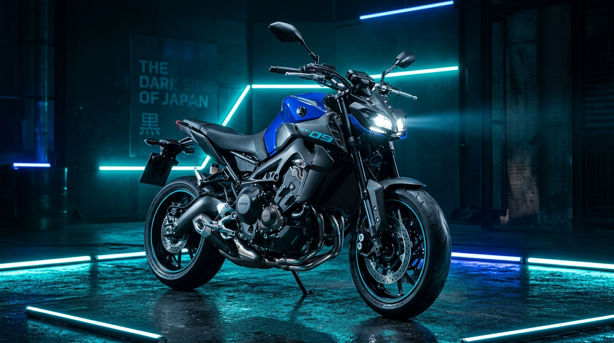
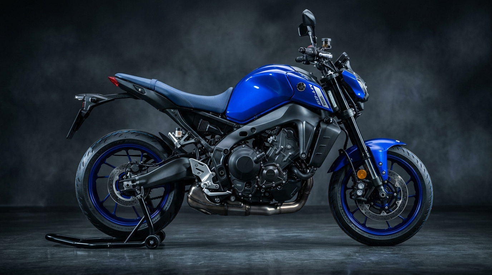
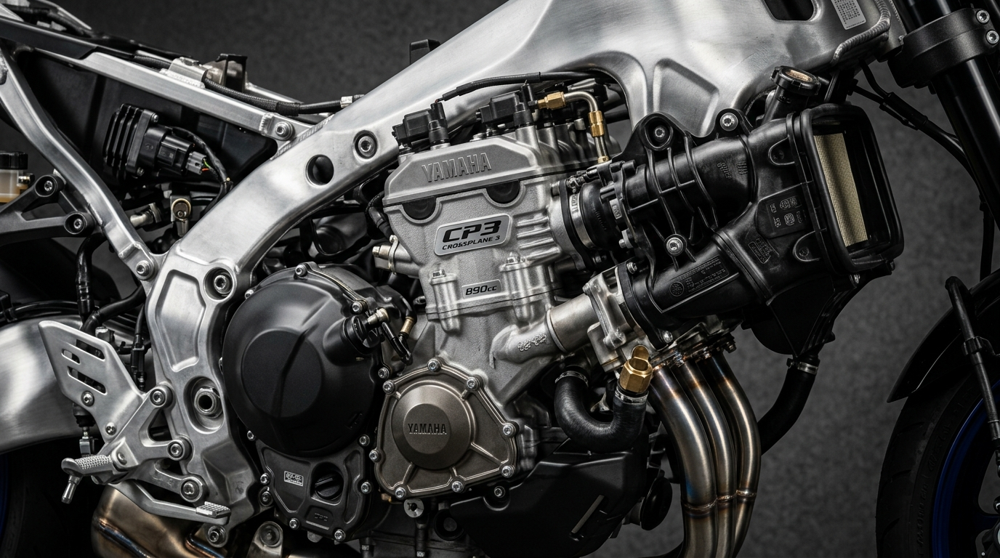
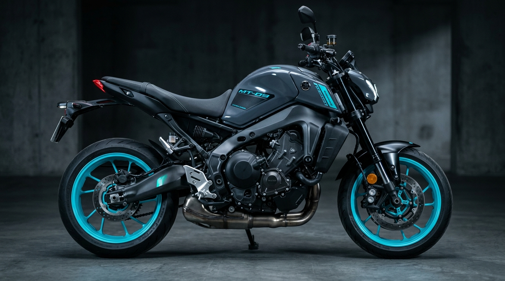
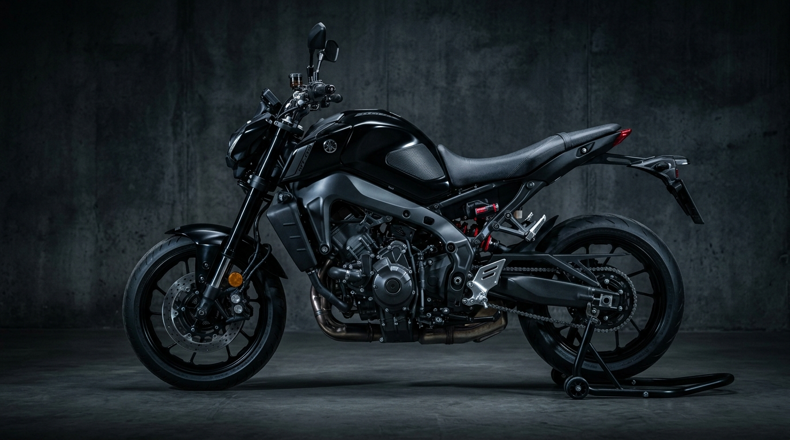

SAF ADRENALİN.
YAMAHA MT-09
890cc CP3 Crossplane 3-silindirli motoru, yattığı açıyı algılayan 6 eksenli IMU sürüş destek sistemleri ve agresif gövde tasarımı ile Hyper Naked segmentinin kurallarını yeniden yazıyor.
119 PS
Maksimum Güç
93 Nm
Maksimum Tork
193 kg
Islak Ağırlık
890 cc
CP3 Motor

KARAKTERİNİ SEÇ
Yamaha MT-09 modeline özel sunlanan renk seçeneklerini inceleyin ve orijinal aksesuarlar ekleyerek motorunuzu tasarlayın.

Gövde Rengi Seçimi
CP3 MOTOR SESİ & DEVİR
Yamaha'nın 890cc 3-silindirli Crossplane motorunun ikonik egzoz sesini canlı olarak simüle edin.
890cc CP3 CROSSPLANE MÜHENDİSLİĞİ
MT-09'un kalbinde yatan 890cc 3-silindirli CP3 motoru, doğrusal tork üretimi ve benzersiz emiş sesi ile sürücüye anında tepki verir. 120 derecelik krank açısı sayesinde kusursuz bir ivmelenme sunar.
Ride-by-Wire YCC-T
Elektronik gaz kelebeği kontrolü ile milisaniyelik gaz tepkisi.
Akustik Emiş Kanalları
Yüksek devirlerde kask içine iletilen özel ses mühendisliği.
A&S Kaydırmalı Debriyaj
Sert vites düşüşlerinde arka tekerlek kilitlenmesini önler.
Bi-directional Quickshifter
Debriyajsız vites büyütme ve küçültme imkanı.
6 EKSENLİ IMU & YRC SÜRÜŞ MODLARI
R1 efsanesinden türetilen 6 eksenli IMU sensörü; motosikletin yatma, yalpalama ve savrulma hareketlerini sürekli ölçer.
SPORT SÜRÜŞ MODU
Pist sürüşleri ve agresif viraj performansı için tasarlanmıştır. En keskin gaz yanıtı sunulur, tekerlek kaldırma (LIF) ve çekiş kontrolü (TCS) minimum müdahale seviyesine çekilir.

STREET SÜRÜŞ MODU
Günlük şehir içi kullanım ve uzun yolculuklar için ideal denge. Dengeli ivmelenme ve optimize edilmiş güvenlik sistemleri ile konforlu bir sürüş hissi sağlar.
RAIN SÜRÜŞ MODU
Kaygan, ıslak ve zorlu yol şartlarında maksimum güvenlik. Yumuşatılmış gaz haritası ve hassas çekiş kontrolü sayesinde arka tekerlek patinajı tamamen engellenir.

6 EKSENLİ İLERİ İMU TEKNOLOJİSİ
Sensör motorun açısını saniyede 125 kez tarayarak Yürüme Kayma Kontrolü (SCS), Teker Kalkış Önleme (LIF) ve Viraj ABS (BC) sistemlerini milisaniyelik doğrulukla devreye sokar.

TEKNİK ÖZELLİKLER
Yamaha MT-09 modeline ait tüm resmi motor, şasi, boyut ve elektronik donanım verileri.
| Parametre | Teknik Değer / Detay |
|---|---|
| Motor Tipi | 890 cc, 3-silindirli (CP3 - Crossplane Concept), 4-zamanlı, sıvı soğutmalı, DOHC, 4-subap |
| Çap x Strok | 78.0 mm x 62.1 mm |
| Sıkıştırma Oranı | 11.5 : 1 |
| Maksimum Güç | 87.5 kW (119.0 PS) @ 10.000 dev/dk |
| Maksimum Tork | 93.0 Nm (9.5 kg-m) @ 7.000 dev/dk |
| Yağlama Sistemi | Islak karter |
| Debriyaj Tipi | Islak, Çoklu disk (A&S - Kaydırmalı Debriyaj) |
| Şanzıman | 6 vites, Çift Yönlü Quickshifter (Bi-directional) |
| Yakıt Tüketimi | 5.0 L / 100 km |
| Şasi Yapısı | Alüminyum Döküm Deltabox Şasi |
| Ön Süspansiyon | 41 mm KYB Ters Teleskobik Çatal (Tam Ayarlanabilir), 130 mm strok |
| Arka Süspansiyon | Salınım kolu (Link tipi süspansiyon, KYB Ayarlanabilir Monoşok), 117 mm strok |
| Ön Fren | Brembo Radyal Ana Silindirli İki adet 298 mm disk (Viraj ABS destekli) |
| Arka Fren | Tek disk, 245 mm |
| Ön Lastik | 120/70 ZR17M/C (58W) (Bridgestone Battlax Hypersport S23 Tubeless) |
| Arka Lastik | 180/55 ZR17M/C (73W) Tubeless |
| Toplam Uzunluk x Genişlik x Yükseklik | 2.090 mm x 820 mm x 1.145 mm |
| Sele Yüksekliği | 825 mm |
| Aks Mesafesi | 1.430 mm |
| Minimum Yerden Yükseklik | 140 mm |
| Islak Ağırlık (Tüm sıvılar dahil) | 193 kg |
| Yakıt Deposu Kapasitesi | 14.0 Litre |
YAKIT & MESAFE HESAPLAYICI
Yıllık sürüş mesafenize göre Yamaha MT-09 yakıt tüketimini ve tahmini maliyetini hesaplayın.
DARK SIDE GALERİSİ
Yamaha MT-09 detay fotoğrafları ve yüksek çözünürlüklü görseller.